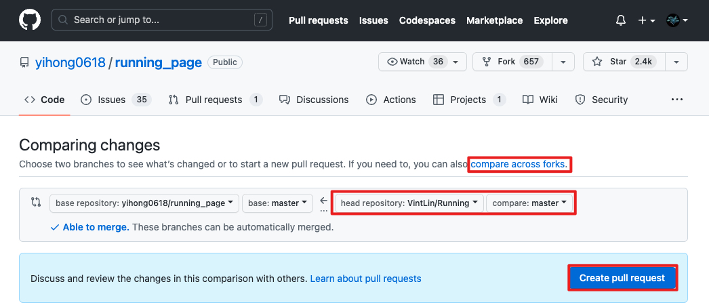

因为受到Yak Shaving的启发，打算为开源项目贡献一份力。以下是记录在Github上发起Pull Request时碰到的问题。
什么是Pull Request?
Pull Request是向代码仓库贡献代码的方式。
Pull Request通常步骤如下：
- 复制（Fork）代码仓库到你自己的Github账号下。
- 因为这个复制的代码仓库在你自己的账号下，所以你有完整的权限，你就可以在此之上进行修改。
- 将修改内容提交（Push）到自己的代码仓库中。
- 发送消息（Pull Request）告知原作者，让他知道你的修改内容。
- 由原作者来合并（Merge）你的修改到他的代码仓库中。
什么是Fork?
当我们喜欢某个代码仓库时，希望能将它添加到自己的Github账号下时，我们会使用Fork，以便单独使用它。
当我们Fork一个代码仓库时，我们会得到这个代码仓库的完整代码。之后就可以以此为基础进行修改，而不会影响到原仓库，而想要让修改同步到原仓库就需要对原仓库提交PR。
如何提交Pull Reqeust？
以 yihong 的 running_page 项目为例， 我 要如何发起Pull Request：
1. 创建Fork
点击仓库上方的**「Fork」**：
配置相关参数，之后点击**「Create fork」**：
这样我就在自己的Github账号下创建了一个Fork仓库：
2. 修改代码
先获取Fork仓库的Git地址：
在本地使用git clone获取代码：
1 | git clone https://github.com/VintLin/Running.git |
修改代码后使用 git commit 提交代码：
1 | git commit -m "commit: update something" |
最后使用 git push 更新远端的代码仓库：
1 | git push -u origin master |
3. 发起Pull Request
回到原来的代码仓库下，到**「Pull requests」页面，点击「New pull request」**：
点击**「compare across forks」，选择代码仓库(VintLin/Running)和分支(master)，点击「Create pull request」**：

填写标题以及补充信息，最后点击**「Create pull request」**：
最后，在原仓库下的Pull requests页面中就可以看到你的PR啦，之后等待仓库拥有者同意就好了~
如何同步原仓库的代码到Fork的仓库中？
在你Fork后原仓库有更新时，Fork的代码仓库并不会跟着更新，当你提交PR时会发现有代码冲突。
此时有两种方法来解决这个问题：
- 删除你的Fork仓库，重新创建Fork进行Pull Request。
- 将原仓库的更新内容合并（Merge）到你的Fork仓库中。
第一个方法这里就不多做赘述了，这边简单讲讲第二种方法。
1. 在Fork仓库中新增远端仓库
1 | 打开Fork仓库的本地路径 |
2. 从远端仓库获取最新的提交历史和文件更改
1 | git fetch upstream |
3. 将原仓库更改内容同步Fork仓库
到此步骤即可在本地解决代码冲突，之后进行Pull Request。
参考链接
如果您喜欢此博客或觉得它对您有用，则欢迎对此发表评论。 也欢迎您分享此博客，以便更多人可以参与。 如果博客中使用的图像侵犯了您的版权，请与我联系以将其删除。 谢谢 ！